垃圾回收（一）
小整数对象池
整数在程序中的使用非常广泛，Python为了优化速度，使用了小整数对象池， 避免为整数频繁申请和销毁内存空间。
Python 对小整数的定义是 [-5, 257) 这些整数对象是提前建立好的，不会被垃圾回收。在一个 Python 的程序中，所有位于这个范围内的整数使用的都是同一个对象.
同理，单个字母也是这样的。
但是当定义2个相同的字符串时，引用计数为0，触发垃圾回收
大整数对象池
每一个大整数，均创建一个新的对象。
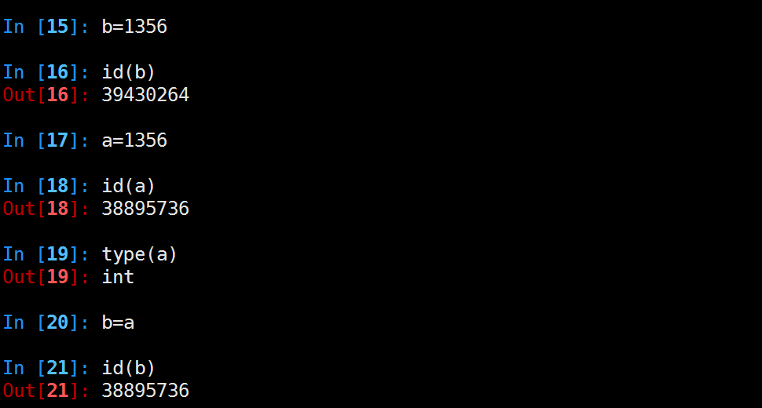
intern机制
a1 = "HelloWorld"
a2 = "HelloWorld"
a3 = "HelloWorld"
a4 = "HelloWorld"
a5 = "HelloWorld"
a6 = "HelloWorld"
a7 = "HelloWorld"
a8 = "HelloWorld"
a9 = "HelloWorld"
python会不会创建9个对象呢？在内存中会不会开辟9个”HelloWorld”的内存空间呢？ 想一下，如果是这样的话，我们写10000个对象，比如a1=”HelloWorld”…..a1000=”HelloWorld”， 那他岂不是开辟了1000个”HelloWorld”所占的内存空间了呢？如果真这样，内存不就爆了吗？所以python中有这样一个机制——intern机制，让他只占用一个”HelloWorld”所占的内存空间。靠引用计数去维护何时释放。
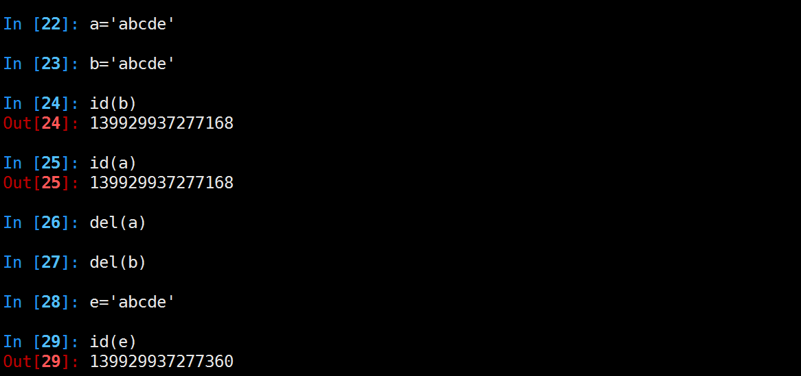
总结
- 小整数[-5,257)共用对象，常驻内存
- 单个字符共用对象，常驻内存
- 单个单词，不可修改，默认开启intern机制，共用对象，引用计数为0，则销毁 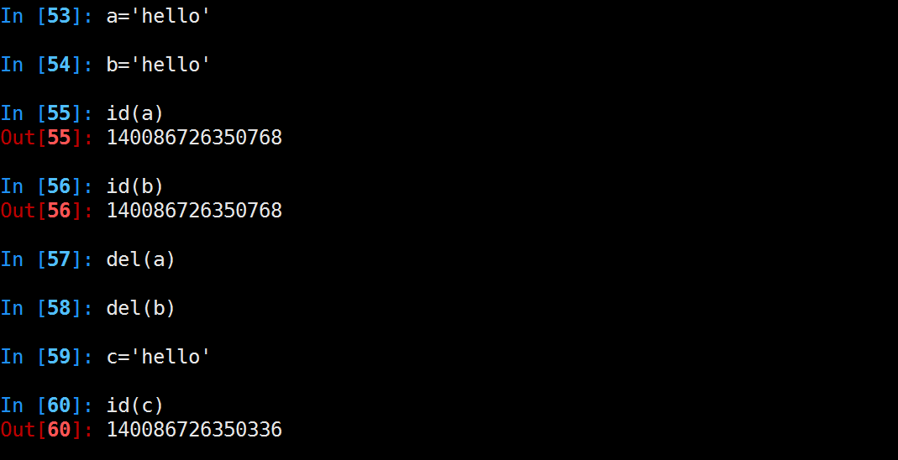
- 字符串（含有空格），不可修改，没开启intern机制，不共用对象，引用计数为0，销毁 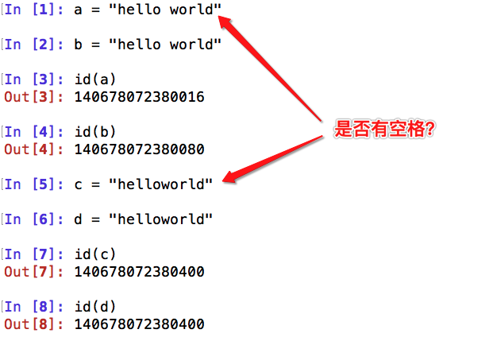
- 大整数不共用内存，引用计数为0，销毁

- 数值类型和字符串类型在 Python 中都是不可变的，这意味着你无法修改这个对象的值，每次对变量的修改，实际上是创建一个新的对象 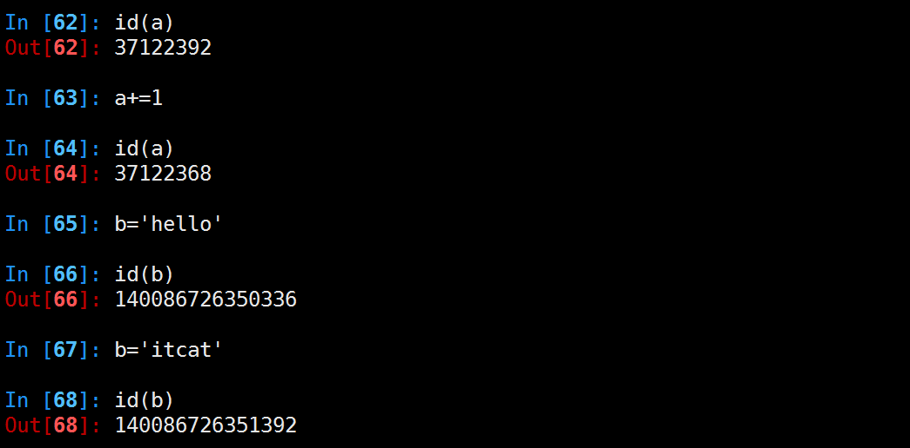
垃圾回收(二)
1. Garbage collection(GC垃圾回收)
现在的高级语言如java，c#等，都采用了垃圾收集机制，而不再是c，c++里用户自己管理维护内存的方式。自己管理内存极其自由，可以任意申请内存，但如同一把双刃剑，为大量内存泄露，悬空指针等bug埋下隐患。 对于一个字符串、列表、类甚至数值都是对象，且定位简单易用的语言，自然不会让用户去处理如何分配回收内存的问题。 python里也同java一样采用了垃圾收集机制，不过不一样的是: python采用的是引用计数机制为主，标记-清除和分代收集两种机制为辅的策略
引用计数机制：
python里每一个东西都是对象，它们的核心就是一个结构体：PyObject
typedef struct_object {
int ob_refcnt;
struct_typeobject *ob_type;
} PyObject;
PyObject是每个对象必有的内容，其中ob_refcnt就是做为引用计数。当一个对象有新的引用时，它的ob_refcnt就会增加，当引用它的对象被删除，它的ob_refcnt就会减少
#define Py_INCREF(op) ((op)->ob_refcnt++) //增加计数
#define Py_DECREF(op) \ //减少计数
if (--(op)->ob_refcnt != 0) \
; \
else \
__Py_Dealloc((PyObject *)(op))
当引用计数为0时，该对象生命就结束了。
引用计数机制的优点：
- 简单
- 实时性：一旦没有引用，内存就直接释放了。不用像其他机制等到特定时机。实时性还带来一个好处：处理回收内存的时间分摊到了平时。
引用计数机制的缺点：
- 维护引用计数消耗资源
- 循环引用
list1 = [] list2 = [] list1.append(list2) list2.append(list1)
list1与list2相互引用，如果不存在其他对象对它们的引用，list1与list2的引用计数也仍然为1，所占用的内存永远无法被回收，这将是致命的。 对于如今的强大硬件，缺点1尚可接受，但是循环引用导致内存泄露，注定python还将引入新的回收机制。(标记清除和分代收集)
2. 画说 Ruby 与 Python 垃圾回收
英文原文:visualizing garbage collection in ruby and python
2.1 应用程序那颗跃动的心
GC系统所承担的工作远比"垃圾回收"多得多。实际上，它们负责三个重要任务。它们
为新生成的对象分配内存识别那些垃圾对象，并且从垃圾对象那回收内存。
如果将应用程序比作人的身体：所有你所写的那些优雅的代码，业务逻辑，算法，应该就是大脑。以此类推，垃圾回收机制应该是那个身体器官呢？（我从RuPy听众那听到了不少有趣的答案：腰子、白血球 :) ）
我认为垃圾回收就是应用程序那颗跃动的心。像心脏为身体其他器官提供血液和营养物那样，垃圾回收器为你的应该程序提供内存和对象。如果心脏停跳，过不了几秒钟人就完了。如果垃圾回收器停止工作或运行迟缓,像动脉阻塞,你的应用程序效率也会下降，直至最终死掉。
2.2 一个简单的例子
运用实例一贯有助于理论的理解。下面是一个简单类，分别用Python和Ruby写成，我们今天就以此为例：
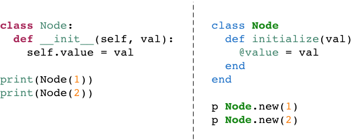
顺便提一句，两种语言的代码竟能如此相像：Ruby 和 Python 在表达同一事物上真的只是略有不同。但是在这两种语言的内部实现上是否也如此相似呢？
2.3 Ruby 的对象分配
当我们执行上面的Node.new(1)时，Ruby到底做了什么？Ruby是如何为我们创建新的对象的呢？ 出乎意料的是它做的非常少。实际上，早在代码开始执行前，Ruby就提前创建了成百上千个对象，并把它们串在链表上，名曰：可用列表。下图所示为可用列表的概念图：
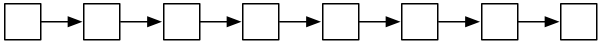
想象一下每个白色方格上都标着一个"未使用预创建对象"。当我们调用 Node.new ,Ruby只需取一个预创建对象给我们使用即可：
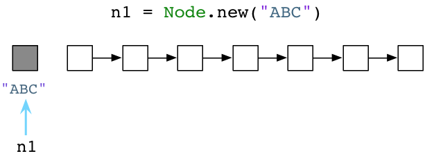
上图中左侧灰格表示我们代码中使用的当前对象，同时其他白格是未使用对象。(请注意：无疑我的示意图是对实际的简化。实际上，Ruby会用另一个对象来装载字符串"ABC",另一个对象装载Node类定义，还有一个对象装载了代码中分析出的抽象语法树，等等)
如果我们再次调用 Node.new，Ruby将递给我们另一个对象：
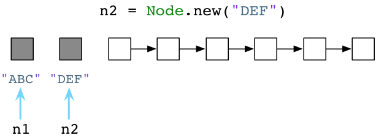
这个简单的用链表来预分配对象的算法已经发明了超过50年，而发明人这是赫赫有名的计算机科学家John McCarthy，一开始是用Lisp实现的。Lisp不仅是最早的函数式编程语言，在计算机科学领域也有许多创举。其一就是利用垃圾回收机制自动化进行程序内存管理的概念。
标准版的Ruby，也就是众所周知的"Matz's Ruby Interpreter"(MRI),所使用的GC算法与McCarthy在1960年的实现方式很类似。无论好坏，Ruby的垃圾回收机制已经53岁高龄了。像Lisp一样，Ruby预先创建一些对象，然后在你分配新对象或者变量的时候供你使用。
2.4 Python 的对象分配
我们已经了解了Ruby预先创建对象并将它们存放在可用列表中。那Python又怎么样呢？
尽管由于许多原因Python也使用可用列表(用来回收一些特定对象比如 list)，但在为新对象和变量分配内存的方面Python和Ruby是不同的。
例如我们用Pyhon来创建一个Node对象：
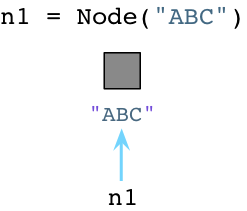
与Ruby不同，当创建对象时Python立即向操作系统请求内存。(Python实际上实现了一套自己的内存分配系统，在操作系统堆之上提供了一个抽象层。但是我今天不展开说了。)
当我们创建第二个对象的时候，再次像OS请求内存：
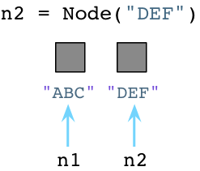
看起来够简单吧，在我们创建对象的时候，Python会花些时间为我们找到并分配内存。
2.5 Ruby 开发者住在凌乱的房间里
Ruby把无用的对象留在内存里，直到下一次GC执行
回过来看Ruby。随着我们创建越来越多的对象，Ruby会持续寻可用列表里取预创建对象给我们。因此，可用列表会逐渐变短:
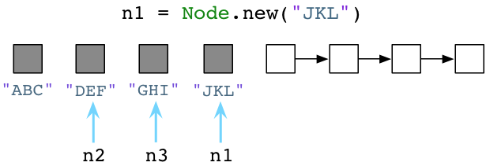
...然后更短：
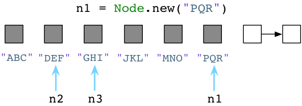
请注意我一直在为变量n1赋新值，Ruby把旧值留在原处。"ABC","JKL"和"MNO"三个Node实例还滞留在内存中。Ruby不会立即清除代码中不再使用的旧对象！Ruby开发者们就像是住在一间凌乱的房间，地板上摞着衣服，要么洗碗池里都是脏盘子。作为一个Ruby程序员，无用的垃圾对象会一直环绕着你。
2.6 Python 开发者住在卫生之家庭
用完的垃圾对象会立即被Python打扫干净
Python与Ruby的垃圾回收机制颇为不同。让我们回到前面提到的三个Python Node对象：
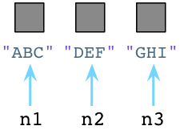
在内部，创建一个对象时，Python总是在对象的C结构体里保存一个整数，称为引用数。期初，Python将这个值设置为1：
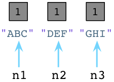
值为1说明分别有个一个指针指向或是引用这三个对象。假如我们现在创建一个新的Node实例，JKL：
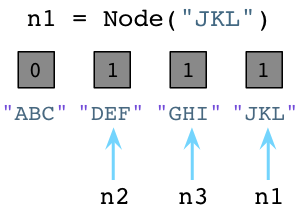
与之前一样，Python设置JKL的引用数为1。然而，请注意由于我们改变了n1指向了JKL，不再指向ABC，Python就把ABC的引用数置为0了。 此刻，Python垃圾回收器立刻挺身而出！每当对象的引用数减为0，Python立即将其释放，把内存还给操作系统：
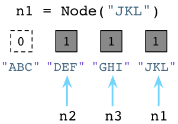
上面Python回收了ABC Node实例使用的内存。记住，Ruby弃旧对象原地于不顾，也不释放它们的内存。
Python的这种垃圾回收算法被称为引用计数。是George-Collins在1960年发明的，恰巧与John McCarthy发明的可用列表算法在同一年出现。就像Mike-Bernstein在6月份哥谭市Ruby大会杰出的垃圾回收机制演讲中说的: "1960年是垃圾收集器的黄金年代..."
Python开发者工作在卫生之家,你可以想象，有个患有轻度OCD(一种强迫症)的室友一刻不停地跟在你身后打扫，你一放下脏碟子或杯子，有个家伙已经准备好把它放进洗碗机了！
现在来看第二例子。加入我们让n2引用n1：
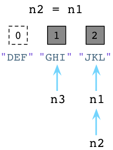
上图中左边的DEF的引用数已经被Python减少了，垃圾回收器会立即回收DEF实例。同时JKL的引用数已经变为了2 ，因为n1和n2都指向它。
2.7 标记-清除
最终那间凌乱的房间充斥着垃圾，再不能岁月静好了。在Ruby程序运行了一阵子以后，可用列表最终被用光光了:
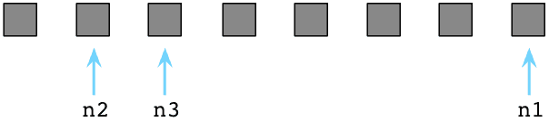
此刻所有Ruby预创建对象都被程序用过了(它们都变灰了)，可用列表里空空如也（没有白格子了）。
此刻Ruby祭出另一McCarthy发明的算法，名曰：标记-清除。首先Ruby把程序停下来，Ruby用"地球停转垃圾回收大法"。之后Ruby轮询所有指针，变量和代码产生别的引用对象和其他值。同时Ruby通过自身的虚拟机便利内部指针。标记出这些指针引用的每个对象。我在图中使用M表示。
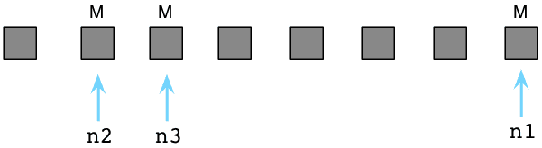
上图中那三个被标M的对象是程序还在使用的。在内部，Ruby实际上使用一串位值，被称为:可用位图(译注：还记得《编程珠玑》里的为突发排序吗，这对离散度不高的有限整数集合具有很强的压缩效果，用以节约机器的资源。)，来跟踪对象是否被标记了。
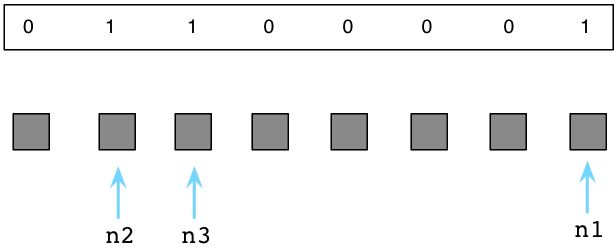
如果说被标记的对象是存活的，剩下的未被标记的对象只能是垃圾，这意味着我们的代码不再会使用它了。我会在下图中用白格子表示垃圾对象：
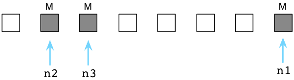
接下来Ruby清除这些无用的垃圾对象，把它们送回到可用列表中：
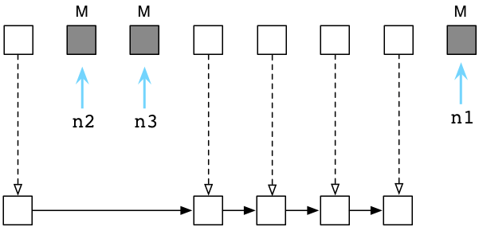
在内部这一切发生得迅雷不及掩耳，因为Ruby实际上不会吧对象从这拷贝到那。而是通过调整内部指针，将其指向一个新链表的方式，来将垃圾对象归位到可用列表中的。
现在等到下回再创建对象的时候Ruby又可以把这些垃圾对象分给我们使用了。在Ruby里，对象们六道轮回，转世投胎，享受多次人生。
2.8 标记-删除 vs. 引用计数
乍一看，Python的GC算法貌似远胜于Ruby的：宁舍洁宇而居秽室乎？为什么Ruby宁愿定期强制程序停止运行，也不使用Python的算法呢？
然而，引用计数并不像第一眼看上去那样简单。有许多原因使得不许多语言不像Python这样使用引用计数GC算法：
首先，它不好实现。Python不得不在每个对象内部留一些空间来处理引用数。这样付出了一小点儿空间上的代价。但更糟糕的是，每个简单的操作（像修改变量或引用）都会变成一个更复杂的操作，因为Python需要增加一个计数，减少另一个，还可能释放对象。
第二点，它相对较慢。虽然Python随着程序执行GC很稳健（一把脏碟子放在洗碗盆里就开始洗啦），但这并不一定更快。Python不停地更新着众多引用数值。特别是当你不再使用一个大数据结构的时候，比如一个包含很多元素的列表，Python可能必须一次性释放大量对象。减少引用数就成了一项复杂的递归过程了。
最后，它不是总奏效的。引用计数不能处理环形数据结构--也就是含有循环引用的数据结构。
3. Python中的循环数据结构以及引用计数
3.1 循环引用
通过上篇，我们知道在Python中，每个对象都保存了一个称为引用计数的整数值，来追踪到底有多少引用指向了这个对象。无论何时，如果我们程序中的一个变量或其他对象引用了目标对象，Python将会增加这个计数值，而当程序停止使用这个对象，则Python会减少这个计数值。一旦计数值被减到零，Python将会释放这个对象以及回收相关内存空间。
从六十年代开始，计算机科学界就面临了一个严重的理论问题，那就是针对引用计数这种算法来说，如果一个数据结构引用了它自身，即如果这个数据结构是一个循环数据结构，那么某些引用计数值是肯定无法变成零的。为了更好地理解这个问题，让我们举个例子。下面的代码展示了一些上周我们所用到的节点类：
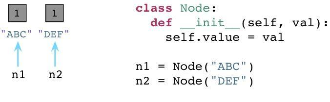
我们有一个"构造器"(在Python中叫做 __init__ )，在一个实例变量中存储一个单独的属性。在类定义之后我们创建两个节点，ABC以及DEF，在图中为左边的矩形框。两个节点的引用计数都被初始化为1，因为各有两个引用指向各个节点(n1和n2)。
现在，让我们在节点中定义两个附加的属性，next以及prev：
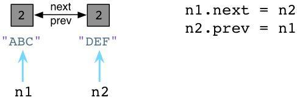
跟Ruby不同的是，Python中你可以在代码运行的时候动态定义实例变量或对象属性。这看起来似乎有点像Ruby缺失了某些有趣的魔法。(声明下我不是一个Python程序员，所以可能会存在一些命名方面的错误)。我们设置 n1.next 指向 n2，同时设置 n2.prev 指回 n1。现在，我们的两个节点使用循环引用的方式构成了一个双向链表。同时请注意到 ABC 以及 DEF 的引用计数值已经增加到了2。这里有两个指针指向了每个节点：首先是 n1 以及 n2，其次就是 next 以及 prev。
现在，假定我们的程序不再使用这两个节点了，我们将 n1 和 n2 都设置为null(Python中是None)。
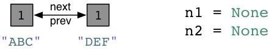
好了，Python会像往常一样将每个节点的引用计数减少到1。
3.2 在Python中的零代(Generation Zero)
请注意在以上刚刚说到的例子中，我们以一个不是很常见的情况结尾：我们有一个“孤岛”或是一组未使用的、互相指向的对象，但是谁都没有外部引用。换句话说，我们的程序不再使用这些节点对象了，所以我们希望Python的垃圾回收机制能够足够智能去释放这些对象并回收它们占用的内存空间。但是这不可能，因为所有的引用计数都是1而不是0。Python的引用计数算法不能够处理互相指向自己的对象。
这就是为什么Python要引入Generational GC算法的原因！正如Ruby使用一个链表(free list)来持续追踪未使用的、自由的对象一样，Python使用一种不同的链表来持续追踪活跃的对象。而不将其称之为“活跃列表”，Python的内部C代码将其称为零代(Generation Zero)。每次当你创建一个对象或其他什么值的时候，Python会将其加入零代链表：
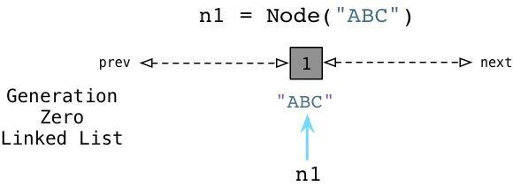
从上边可以看到当我们创建ABC节点的时候，Python将其加入零代链表。请注意到这并不是一个真正的列表，并不能直接在你的代码中访问，事实上这个链表是一个完全内部的Python运行时。 相似的，当我们创建DEF节点的时候，Python将其加入同样的链表：
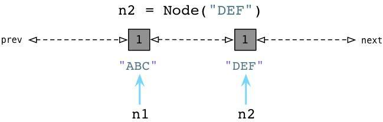
现在零代包含了两个节点对象。(他还将包含Python创建的每个其他值，与一些Python自己使用的内部值。)
3.3 检测循环引用
随后，Python会循环遍历零代列表上的每个对象，检查列表中每个互相引用的对象，根据规则减掉其引用计数。在这个过程中，Python会一个接一个的统计内部引用的数量以防过早地释放对象。
为了便于理解，来看一个例子：
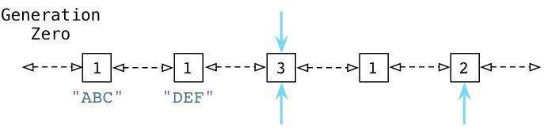
从上面可以看到 ABC 和 DEF 节点包含的引用数为1.有三个其他的对象同时存在于零代链表中，蓝色的箭头指示了有一些对象正在被零代链表之外的其他对象所引用。(接下来我们会看到，Python中同时存在另外两个分别被称为一代和二代的链表)。这些对象有着更高的引用计数因为它们正在被其他指针所指向着。
接下来你会看到Python的GC是如何处理零代链表的。
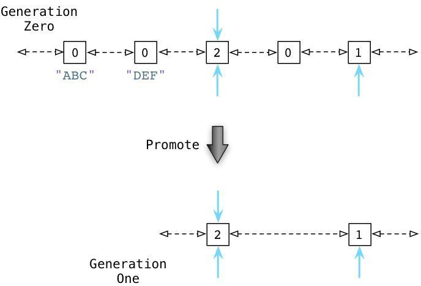
通过识别内部引用，Python能够减少许多零代链表对象的引用计数。在上图的第一行中你能够看见ABC和DEF的引用计数已经变为零了，这意味着收集器可以释放它们并回收内存空间了。剩下的活跃的对象则被移动到一个新的链表：一代链表。
从某种意义上说，Python的GC算法类似于Ruby所用的标记回收算法。周期性地从一个对象到另一个对象追踪引用以确定对象是否还是活跃的，正在被程序所使用的，这正类似于Ruby的标记过程。
Python中的GC阈值
Python什么时候会进行这个标记过程？随着你的程序运行，Python解释器保持对新创建的对象，以及因为引用计数为零而被释放掉的对象的追踪。从理论上说，这两个值应该保持一致，因为程序新建的每个对象都应该最终被释放掉。
当然，事实并非如此。因为循环引用的原因，并且因为你的程序使用了一些比其他对象存在时间更长的对象，从而被分配对象的计数值与被释放对象的计数值之间的差异在逐渐增长。一旦这个差异累计超过某个阈值，则Python的收集机制就启动了，并且触发上边所说到的零代算法，释放“浮动的垃圾”，并且将剩下的对象移动到一代列表。
随着时间的推移，程序所使用的对象逐渐从零代列表移动到一代列表。而Python对于一代列表中对象的处理遵循同样的方法，一旦被分配计数值与被释放计数值累计到达一定阈值，Python会将剩下的活跃对象移动到二代列表。
通过这种方法，你的代码所长期使用的对象，那些你的代码持续访问的活跃对象，会从零代链表转移到一代再转移到二代。通过不同的阈值设置，Python可以在不同的时间间隔处理这些对象。Python处理零代最为频繁，其次是一代然后才是二代。
弱代假说
来看看代垃圾回收算法的核心行为：垃圾回收器会更频繁的处理新对象。一个新的对象即是你的程序刚刚创建的，而一个来的对象则是经过了几个时间周期之后仍然存在的对象。Python会在当一个对象从零代移动到一代，或是从一代移动到二代的过程中提升(promote)这个对象。
为什么要这么做？这种算法的根源来自于弱代假说(weak generational hypothesis)。这个假说由两个观点构成：首先是年亲的对象通常死得也快，而老对象则很有可能存活更长的时间。
假定现在我用Python或是Ruby创建一个新对象：
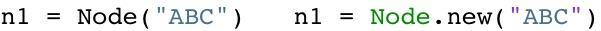
根据假说，我的代码很可能仅仅会使用ABC很短的时间。这个对象也许仅仅只是一个方法中的中间结果，并且随着方法的返回这个对象就将变成垃圾了。大部分的新对象都是如此般地很快变成垃圾。然而，偶尔程序会创建一些很重要的，存活时间比较长的对象-例如web应用中的session变量或是配置项。
通过频繁的处理零代链表中的新对象，Python的垃圾收集器将把时间花在更有意义的地方：它处理那些很快就可能变成垃圾的新对象。同时只在很少的时候，当满足阈值的条件，收集器才回去处理那些老变量。
垃圾回收(三)-gc模块
一.垃圾回收机制
Python中的垃圾回收是以引用计数为主，分代收集为辅。
1、导致引用计数+1的情况
对象被创建，例如a=23对象被引用，例如b=a对象被作为参数，传入到一个函数中，例如func(a)对象作为一个元素，存储在容器中，例如list1=[a,a]
2、导致引用计数-1的情况
对象的别名被显式销毁，例如del a对象的别名被赋予新的对象，例如a=24一个对象离开它的作用域，例如f函数执行完毕时，func函数中的局部变量（全局变量不会）对象所在的容器被销毁，或从容器中删除对象
3、查看一个对象的引用计数
import sys
a = "hello world"
sys.getrefcount(a)
可以查看a对象的引用计数，但是比正常计数大1，因为调用函数的时候传入a，这会让a的引用计数+1
二.循环引用导致内存泄露
引用计数的缺陷是循环引用的问题
import gc
class ClassA():
def __init__(self):
print('object born,id:%s'%str(hex(id(self))))
def f2():
while True:
c1 = ClassA()
c2 = ClassA()
c1.t = c2
c2.t = c1
del c1
del c2
#把python的gc关闭
gc.disable()
f2()
执行f2()，进程占用的内存会不断增大。
- 创建了c1，c2后这两块内存的引用计数都是1，执行
c1.t=c2和c2.t=c1后，这两块内存的引用计数变成2. - 在del c1后，内存1的对象的引用计数变为1，由于不是为0，所以内存1的对象不会被销毁，所以内存2的对象的引用数依然是2，在del c2后，同理，内存1的对象，内存2的对象的引用数都是1。
- 虽然它们两个的对象都是可以被销毁的，但是由于循环引用，导致垃圾回收器都不会回收它们，所以就会导致内存泄露。
三.垃圾回收
#coding=utf-8
import gc
class ClassA():
def __init__(self):
print('object born,id:%s'%str(hex(id(self))))
# def __del__(self):
# print('object del,id:%s'%str(hex(id(self))))
def f3():
print("-----0------")
# print(gc.collect())
c1 = ClassA()
c2 = ClassA()
c1.t = c2
c2.t = c1
print("-----1------")
del c1
del c2
print("-----2------")
print(gc.garbage)
print("-----3------")
print(gc.collect()) #显式执行垃圾回收
print("-----4------")
print(gc.garbage)
print("-----5------")
if __name__ == '__main__':
gc.set_debug(gc.DEBUG_LEAK) #设置gc模块的日志
f3()
python2运行结果:
-----0------
object born,id:0x724b20
object born,id:0x724b48
-----1------
-----2------
[]
-----3------
gc: collectable <ClassA instance at 0x724b20>
gc: collectable <ClassA instance at 0x724b48>
gc: collectable <dict 0x723300>
gc: collectable <dict 0x71bf60>
4
-----4------
[<__main__.ClassA instance at 0x724b20>, <__main__.ClassA instance at 0x724b48>, {'t': <__main__.ClassA instance at 0x724b48>}, {'t': <__main__.ClassA instance at 0x724b20>}]
-----5------
说明:
- 垃圾回收后的对象会放在gc.garbage列表里面
- gc.collect()会返回不可达的对象数目，4等于两个对象以及它们对应的dict
有三种情况会触发垃圾回收：
- 调用gc.collect(),
- 当gc模块的计数器达到阀值的时候。
- 程序退出的时候
四.gc模块常用功能解析
gc模块提供一个接口给开发者设置垃圾回收的选项。上面说到，采用引用计数的方法管理内存的一个缺陷是循环引用，而gc模块的一个主要功能就是解决循环引用的问题。
常用函数：
1、gc.set_debug(flags) 设置gc的debug日志，一般设置为gc.DEBUG_LEAK
2、gc.collect([generation]) 显式进行垃圾回收，可以输入参数，0代表只检查第一代的对象，1代表检查一，二代的对象，2代表检查一，二，三代的对象，如果不传参数，执行一个full collection，也就是等于传2。 返回不可达（unreachable objects）对象的数目
3、gc.get_threshold() 获取的gc模块中自动执行垃圾回收的频率。
4、gc.set_threshold(threshold0[, threshold1[, threshold2]) 设置自动执行垃圾回收的频率。
5、gc.get_count() 获取当前自动执行垃圾回收的计数器，返回一个长度为3的列表
gc模块的自动垃圾回收机制
必须要import gc模块，并且is_enable()=True才会启动自动垃圾回收。
这个机制的主要作用就是发现并处理不可达的垃圾对象。
垃圾回收=垃圾检查+垃圾回收
在Python中，采用分代收集的方法。把对象分为三代，一开始，对象在创建的时候，放在一代中，如果在一次一代的垃圾检查中，改对象存活下来，就会被放到二代中，同理在一次二代的垃圾检查中，该对象存活下来，就会被放到三代中。
gc模块里面会有一个长度为3的列表的计数器，可以通过gc.get_count()获取。
例如(488,3,0)，其中488是指距离上一次一代垃圾检查，Python分配内存的数目减去释放内存的数目，注意是内存分配，而不是引用计数的增加。例如：
print gc.get_count() # (590, 8, 0)
a = ClassA()
print gc.get_count() # (591, 8, 0)
del a
print gc.get_count() # (590, 8, 0)
3是指距离上一次二代垃圾检查，一代垃圾检查的次数，同理，0是指距离上一次三代垃圾检查，二代垃圾检查的次数。
gc模快有一个自动垃圾回收的阀值，即通过gc.get_threshold函数获取到的长度为3的元组，例如(700,10,10) 每一次计数器的增加，gc模块就会检查增加后的计数是否达到阀值的数目，如果是，就会执行对应的代数的垃圾检查，然后重置计数器
例如，假设阀值是(700,10,10)：
当计数器从(699,3,0)增加到(700,3,0)，gc模块就会执行gc.collect(0),即检查一代对象的垃圾，并重置计数器为(0,4,0)
当计数器从(699,9,0)增加到(700,9,0)，gc模块就会执行gc.collect(1),即检查一、二代对象的垃圾，并重置计数器为(0,0,1)
当计数器从(699,9,9)增加到(700,9,9)，gc模块就会执行gc.collect(2),即检查一、二、三代对象的垃圾，并重置计数器为(0,0,0)
注意点
gc模块唯一处理不了的是循环引用的类都有__del__方法，所以项目中要避免定义__del__方法
import gc
class ClassA():
pass
# def __del__(self):
# print('object born,id:%s'%str(hex(id(self))))
gc.set_debug(gc.DEBUG_LEAK)
a = ClassA()
b = ClassA()
a.next = b
b.prev = a
print "--1--"
print gc.collect()
print "--2--"
del a
print "--3--"
del b
print "--3-1--"
print gc.collect()
print "--4--"
运行结果：
--1--
0
--2--
--3--
--3-1--
gc: collectable <ClassA instance at 0x21248c8>
gc: collectable <ClassA instance at 0x21248f0>
gc: collectable <dict 0x2123030>
gc: collectable <dict 0x2123150>
4
--4--
如果把del打开，运行结果为:
--1--
0
--2--
--3--
--3-1--
gc: uncollectable <ClassA instance at 0x6269b8>
gc: uncollectable <ClassA instance at 0x6269e0>
gc: uncollectable <dict 0x61bed0>
gc: uncollectable <dict 0x6230c0>
4
--4--